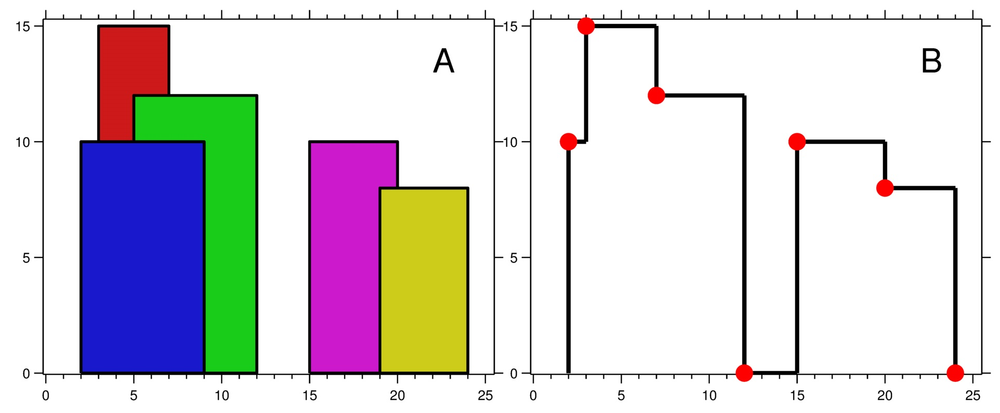

218. 天际线问题
扫描线事件按 (x, ±h) 排序：左端点存 −h、右端点存 +h；计数多重集维护当前最大高度，变化处输出关键点。
思路
- 每栋楼拆成两个事件：左端点
−h、右端点+h，按(x, 带符号高度)排序——同一 x 先加高的、先删矮的，自然不产生毛刺。 TreeMap<高度, 楼数>当多重集：加入 +1，删除 −1（减到 0 删键），lastKey()就是当前最大高度。- 最大高度与上一次不同才输出
[x, 新高度]；地面0常驻集合里，最后一栋楼结束时自动输出归零点。
图解
最优解
1import java.util.*;2 3class Solution {4 public List<List<Integer>> getSkyline(int[][] buildings) {5 // 扫描线事件：左端点存 -h（同一 x 先加高的），右端点存 +h（同一 x 先删矮的）6 List<int[]> events = new ArrayList<>();7 for (int[] b : buildings) {8 events.add(new int[]{b[0], -b[2]});9 events.add(new int[]{b[1], b[2]});10 }11 events.sort((a, b) -> a[0] != b[0] ? Integer.compare(a[0], b[0]) : Integer.compare(a[1], b[1]));12 List<List<Integer>> ans = new ArrayList<>();13 TreeMap<Integer, Integer> alive = new TreeMap<>(); // 高度 → 楼数，lastKey 即当前最大14 alive.put(0, 1); // 地面常驻，最后一栋楼结束自动归零15 int prev = 0;16 for (int[] e : events) {17 if (e[1] < 0) alive.merge(-e[1], 1, Integer::sum);18 else if (alive.merge(e[1], -1, Integer::sum) == 0) alive.remove(e[1]);19 int cur = alive.lastKey();20 if (cur != prev) {21 ans.add(Arrays.asList(e[0], cur));22 prev = cur;23 }24 }25 return ans;26 }27}题目
城市的 天际线 是从远处观看该城市中所有建筑物形成的轮廓的外部轮廓。给你所有建筑物的位置和高度，请返回 由这些建筑物形成的 天际线 。
每个建筑物的几何信息由数组 buildings 表示，其中三元组 buildings[i] = [lefti, righti, heighti] 表示：
lefti是第i座建筑物左边缘的x坐标。righti是第i座建筑物右边缘的x坐标。heighti是第i座建筑物的高度。
你可以假设所有的建筑都是完美的长方形，在高度为 0 的绝对平坦的表面上。
天际线 应该表示为由 “关键点” 组成的列表，格式 [[x1,y1],[x2,y2],...] ，并按 x 坐标 进行 排序 。关键点是水平线段的左端点。列表中最后一个点是最右侧建筑物的终点，y 坐标始终为 0 ，仅用于标记天际线的终点。此外，任何两个相邻建筑物之间的地面都应被视为天际线轮廓的一部分。
注意：输出天际线中不得有连续的相同高度的水平线。例如 [...[2 3], [4 5], [7 5], [11 5], [12 7]...] 是不正确的答案；三条高度为 5 的线应该在最终输出中合并为一个：[...[2 3], [4 5], [12 7], ...]
示例 1：

输入：buildings = [[2,9,10],[3,7,15],[5,12,12],[15,20,10],[19,24,8]] 输出：[[2,10],[3,15],[7,12],[12,0],[15,10],[20,8],[24,0]] 解释： 图 A显示输入的所有建筑物的位置和高度， 图 B 显示由这些建筑物形成的天际线。图 B 中的红点表示输出列表中的关键点。
示例 2：
输入：buildings = [[0,2,3],[2,5,3]] 输出：[[0,3],[5,0]]
提示：
1 <= buildings.length <= 1040 <= lefti < righti <= 231 - 11 <= heighti <= 231 - 1buildings按lefti非递减排序
题面取自力扣当前版本。
数据快照 2026-11-04。题面版权归力扣所有，本站点仅供本人学习使用，请勿对外发布。